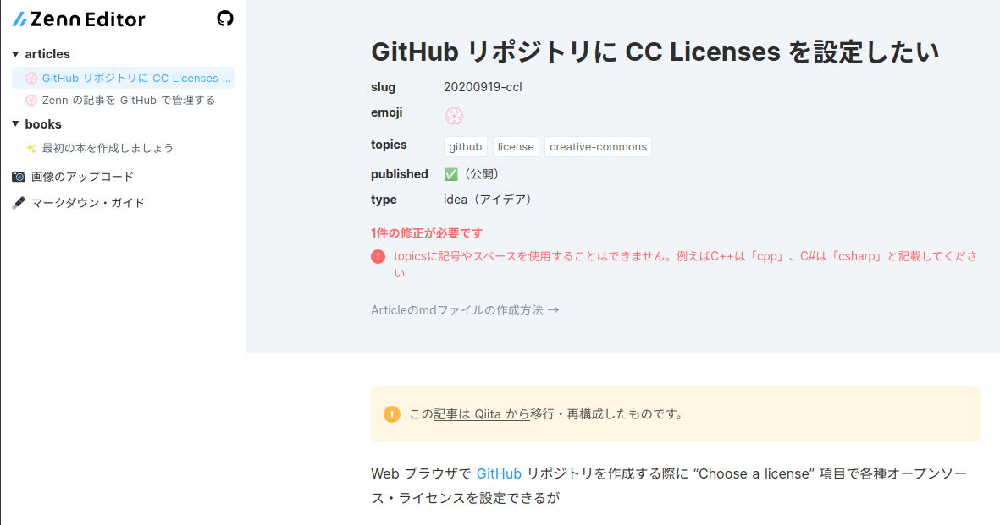

近ごろ流行りらしい “Zenn” のアカウントを作ってみた

きっかけは @tsuyoshi_cho さんの
で，最近の更新に
Zennへ移植改訂しました。
https://zenn.dev/tsuyoshicho/articles/git-aliases-revised
とあって「Zenn ってなんじゃら？」と調べてみた。
プログラマーのための新しい情報共有サービス「Zenn」をリリースしました🎉
— catnose (@catnose99) September 16, 2020
コンセプトは、有益な情報を共有する人がもっと対価を得られること。
noteのようにお互いを金銭的にサポートしたり、知見を本にまとめて販売したりできるプラットフォームです。https://t.co/l0lxlW24Ug pic.twitter.com/qrddHoCWsr
おおっ！ 最近 launch したサービスだったのか。
パッと見の印象は「Qiita ＋ note」という感じ。 今や note が出版社御用達のプラットフォームになっているように Zenn は（決済可能な）エンジニア御用達のプラットフォームになれればいいねぇ。
というわけで，とりあえずアカウントを作ってみた。
日本のサービスは spiegel 名義でアカウントが取れるのが素敵♡
ただ，決済情報は未入力のままにしてある。 できればクレカや銀行口座より PayPal 決済に対応して欲しい。 達人出版会も PayPal 決済だし，技術系のサービスなんだからその方がいいと思うのだが…
“Tech” と “Idea” という色分け
Zenn では “Tech” と “Idea” の2つの固定カテゴリが用意されていて，投稿する記事は必ずどちらかのカテゴリに含まれる。 説明によると
- Tech
- Idea
なんだそうだ。 Qiita で技術記事と所謂「ポエム」が入り混じって出てくる状況を見れば妥当な措置だろう。 まぁ，悩んだら “Idea” にするのがいいんだろうねぇ。
GitHub との連携
Zenn では GitHub リポジトリから記事を deploy することができる。 具体的な手順は以下の記事を参照のこと。
ただし，いくつか制限があって
- リポジトリ上の記事を削除しても Zenn に反映されない
- 一度 Zenn に deploy された記事の slug は変更できない（別の記事として扱われる）
- 既に Zenn でオン書きしたコンテンツは GitHub に反映されない
ようだ。
GitHub でリポジトリを作る際は，リポジトリ名は任意だが， .gitignore や README.md は作成しなくてよい。
これらは後述する zenn-cli ツールで作成される。
zenn-cli ツールの導入
まずは Ubuntu 環境に node.js をインストールしてしまおう（まだ導入していない場合）。 こんな感じでいいだろう。
curl -sL https://deb.nodesource.com/setup_current.x | sudo -E bash -
sudo apt install -y nodejs
次に，作成した GitHub リポジトリを適当な場所に git clone し，リポジトリのあるディレクトリに移動する。
まずは npm の初期化から。
$ cd ~/workspace
$ gh repo clone spiegel-im-spiegel/zenn-docs
$ cd zenn-docs
$ npm init --yes
Wrote to /home/username/workspace/zenn-docs/package.json:
{
"name": "zenn-docs",
"version": "1.0.0",
"description": "## Links",
"main": "index.js",
"scripts": {
"test": "echo \"Error: no test specified\" && exit 1"
},
"repository": {
"type": "git",
"url": "git+https://github.com/spiegel-im-spiegel/zenn-docs.git"
},
"keywords": [],
"author": "",
"license": "ISC",
"bugs": {
"url": "https://github.com/spiegel-im-spiegel/zenn-docs/issues"
},
"homepage": "https://github.com/spiegel-im-spiegel/zenn-docs#readme"
}
package.json は弄らなくて大丈夫。
続けて zenn-cli ツールをインストールする。
$ npm install zenn-cli
...
+ zenn-cli@0.1.29
added 5 packages from 3 contributors, removed 3 packages, updated 3 packages, moved 1 package and audited 905 packages in 42.516s
found 5 low severity vulnerabilities
run `npm audit fix` to fix them, or `npm audit` for details
なんか不穏なメッセージが見えるが大丈夫か，これ。 …まぁいいや1。 次いってみよう。
zenn-cli ツールがインストールできたらリポジトリ内を初期化する。
$ npx zenn init
🎉Done!
早速コンテンツを作成しましょう
👇新しい記事を作成する
$ zenn new:article
👇新しい本を作成する
$ zenn new:book
👇表示をプレビューする
$ zenn preview
これでリポジトリ内に articles/ および books/ ディレクトリが作成され，さらに .gitignore および README.md ファイルも作成される。
ちなみに .gitignore の中身はこんな感じ。
node_modules
.DS_Store
何ともシンプルだが，これで zenn-cli インストール時に作成される node_modules/ ディレクトリはリポジトリから除外される。
ここまで出来たら一度コミットしておいたほうがいいだろう。
記事の作成
入力ファイルの作成には以下のコマンドを打つ。
$ npx zenn new:article
📄d309af5057a827deda35.md created.
このファイル名がそのまま slug として URL のパスになる。
Slug は zenn-cli ツールが適当に生成するのでユーザは考えなくともよい。
もし slug を指定したいのであれば --slug オプションを使う。
$ npx zenn new:article --slug hello-zenn-world
📄hello-zenn-world.md created.
ただし slug 文字列には以下の制限がある。
- 半角英数字（a-z, 0-9）とハイフン（-）の 12〜50 字の組み合わせのみ有効
articles以下のファイルはディレクトリ階層に出来ない（フラットな構成）booksの場合は「本」ごとに slug を指定できる。本の slug 以下はフラットな構成
Slug 文字列が短いとエラーになるのでご注意を。
$ npx zenn new:article --slug hello
エラー：slugの値（hello）が不正です。半角英数字（a-z0-9）とハイフン（-）の12〜50字の組み合わせにしてください
作成したファイルの中身は，以下のように front matter のひな型のみが書き込まれている。
---
title: ""
emoji: "🎉"
type: "tech" # tech: 技術記事 / idea: アイデア
topics: []
published: true
---
emoji 項目は，記事のアテンションに使われるのだが，毎回ランダムな文字で初期化されるようだ。
絵文字を直接入力することはないのだが GitHub markdown のように文字列で指定できないものかねぇ。
プレビューが素敵！
【2020-09-20 更新】 以前プレビュー機能が動かないと書いたが，他でも Issue が上がっていたらしく，対応されていた。 感謝！
この節は，以前の内容から差し替えている。 なお，障害報告は GitHub の zenn-dev/zenn-roadmap/issues に上げてほしいとのこと。
以下のコマンドでプレビュー用のローカルサーバが起動する。
$ npx zenn preview
👀Preview on http://localhost:8000
画面はこんな感じ。
{kind=link}

おおっ！ 間違いまで指摘してくれるのか。 こりゃあ，ええ。
エディタの markdown プレビュー機能でもある程度は見れるけど，やっぱサービス立ち上げてブラウザで確認できるのがいいよね。
うんうん。
とりあえず私も…
まずは Qiita に置いてる記事の一部を移行してみるか。 古すぎて使えない記事はダメだけど（笑）